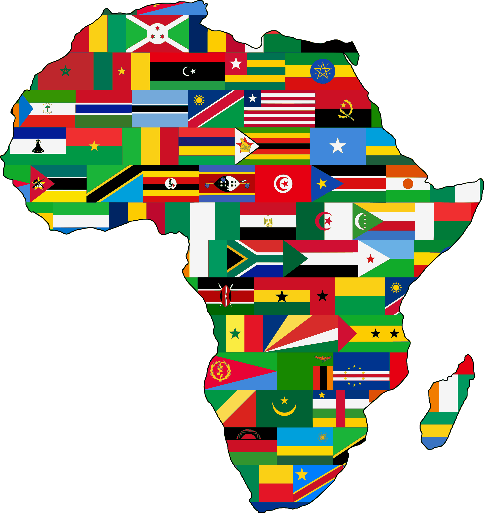

África Terra Mãe
Inicial
Minha Experiência
Quiz
Quiz África Terra Mãe
Responda as perguntas e veja sua pontuação!
1. Quem foi Nelson Mandela?
Um jogador de futebol
Um líder contra o Apartheid
Um cantor sul-africano
2. O que foi o Apartheid?
Um regime de segregação racial
Um tipo de dança africana
Uma reserva natural
3. Qual animal NÃO faz parte dos Big Five?
Elefante
Rinoceronte
Girafa
4. Onde fica o Parque Kruger?
África do Sul
Nigéria
Egito
5. Quantos idiomas oficiais tem a África do Sul?
11
3
7
6. Qual desses é um dos Big Five?
Búfalo
Hiena
Zebra
7. Nelson Mandela foi presidente da África do Sul em que ano?
1994
1980
2005
8. Qual desses animais é conhecido por ser mais difícil de avistar no safári?
Elefante
Leopardo
Búfalo
9. Por que os Big Five receberam esse nome?
Eram os mais difíceis de caçar
São os maiores animais do mundo
São os mais rápidos da savana
10. Como era conhecido Nelson Mandela pelos sul-africanos?
Doutor África
Madiba
Zulu Rei
Ver Resultado
